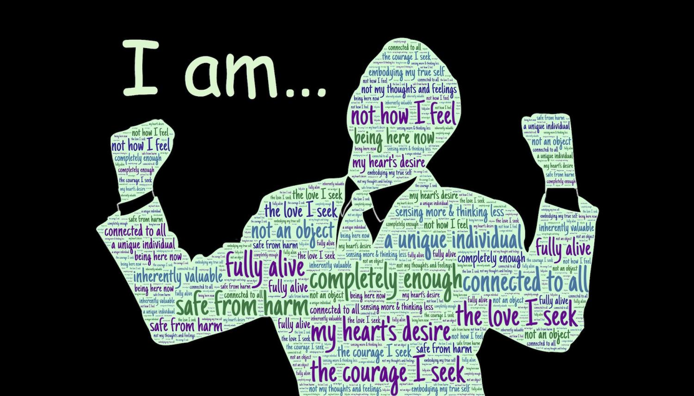

Answer to Driving Question
How can I (a teenager) be the best version of myself, and support the identity of others?
As a teenager, I can become the best version of myself and still support others by building positive relationships which have numerous benefits on us and the people around us. One such benefit is lower anxiety and depression rates. It has been found that 1.1% of adolescents aged 10–14 years, and 2.8% of 15–19 year olds suffer from depression. This means that by building positive relationships, these numbers will drop drastically. Practising empathy is an important part of healthy relationships as it allows us to understand others’ feelings and helps to build connections with them. Which creates a safer environment where everyone feels a sense of belonging and security. This leads to reducing the feeling of loneliness and isolation that is responsible for depression and anxiety. Through this, we are able to discover more about ourselves and the people around us which will help to support the identity of one another.
